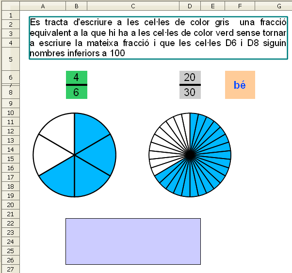

Presentació gràfica de l'activitat

Funcions que es faran servir en aquesta activitat:
Objectiu de l'activitat
Calcular una fracció equivalent partint d'una altra i fer la comparació gràfica mitjançant diagrames de sectors.
Desenvolupament de l'activitat
1. Obrir el fitxer M3 i afegir un nou full anomenant-lo M3P5 fraccions equivalents diagrames
2. Escriure a la cel·la B6: =SI(A1=0;ALEATENTRE(1;6))
3. Escriure a la cel·la B8:=SI(A1=0;ALEATENTRE(B6+1;10))
4.Fer que el fons de les cel·les B6 i B8 sigui verd.
5. Escriure a la cel·la F6: =SI(I(B6=D6;B8=D8);"";SI(O(D6="";D8="");"";SI(B6*D8=B8*D6;"bé";"no"))) per avaluar l'activitat.
6. Fusionar les cel·les F6:F8 i fer que el fons de la cel·la F6 sigui de color taronja 4. Aquesta cel·la avaluarà l'activitat.
7. Fer que el color de fons de les cel·les D6 i D8 sigui gris 20%. En aquestes cel·les l'alumne escriurà les solucions.
8. Escriure a la cel·la B22: =SI(O(D6="";D8="");"";SI(I(B6=D6;B8=D8);"S'ha escrit la mateixa fracció. Cal escriure una fracció que no sigui la mateixa que la que es proposa.";"")). En cas que l'alumne escrigui la mateixa fracció, es mostra la informació pertinent en aquesta cel·la
9. Fusionar les cel·les del rang B22:D26 i fer que el color de fons de la cel·la sigui Sun 4
10. Inserir un quadre de text on s'escrigui el següent: Es tracta d'escriure a les cel·les de color gris una fracció equivalent a la que hi ha a les cel·les de color verd sense tornar a escriure la mateixa fracció i que les cel·les D6 i D8 siguin nombres inferiors a 100. Posicionar aquest quadre de text com es veu en el gràfic de la presentació de l'activitat
11. Escriure a la cel·la H6: =B6
12. Escriure a la cel·la H8: =B8
13. Escriure a la cel·la G8: =H6/H8
14. Escriure a la cel·la G6: =1-G8
L'explicació d'aquests dos últims passos és la mateixa que la que hi ha en les notes de
pràctica 3 del mòdul 3
.Formatar l'amplada de les columnes amb les següents dades:
Columna A: 2,16cm
Columna B: 1cm
Columna C: 4,30cm
Columnes D, E, F i G: 1cm
De la columna H fins la columna R: 0,50cm
Columna T: 1cm
De la columna U fins la columna DP: 0,5cm
16. Escriure a la cel·la I8: =SI($B$8>=1;1;"")
17. Copiar la cel·la I8 a les cel·les del rang I8:R8 tenint en compte que després caldrà modificar el valor que hi ha després de l'igual augment-lo en una unitat fins arribar a 10. Exemple: cel·la I8: =SI($B$8>=1;1;""), cel·la J8: =SI($B$8>=2;1;"") …
L'activitat està pensada perquè valor de la cel·la B8 sigui 10 com a màxim. Evidentment aquest nombre es pot canviar.
18. Escriure a la cel·la
U6:
=D6
19. Escriure a la cel·la
U8:
=D8
20. Escriure a la cel·la
T8:
=U6/U8
21. Escriure a la cel·la
T6:
=1-T8
22. Escriure el número
1 a la cel·la
V6
23. Extendre la cel·la
V6 fins la cel·la
DP6 amb la qual cosa s'obté una llista de números fins el
99
24. Escriure a la cel·la
V8:
=SI($D$8>=V6;1;"")
25. Extendre la cel·la
V8 fins la cel·la
DP8
26.Fer un diagrama de sectors amb les dades que hi ha a les cel·les del rang
G6:
G8.
En mostrar l'assistent el primer pas per fer el diagrama, fer clic en Diagrames de sectors i clic en Finalitza. Després fer el següent:
Apropar el cursor del ratolí a la llegenda del diagrama fins que es mostri la paraula "llegenda". En fer-ho, fer clic a la llegenda per eleminar-la amb la tecla Supr
Per canviar els colors dels sectors. fer el següent:
Fer doble clic al diagrama i després observar que en passar el punter del ratolí per sobre dels sectors es mostra una finestreta en la qual hi ha escrit "Punt de dades …"
En veure aquesta finestreta, fer clic al sector del diagrama i del menú, anar a Format | Formata la selecció | clic en la solapa Àrea i triar el color blanc
Finalment fer cli en d'acord
Fer el mateix procediment perquè el segon sector sigui de color bau 7.
*Fer clic en qualsevol cel·la, tornar a fer clic al diagrama i clic al botó dret del ratolí per mostrar el menú contextual.
D'aquest menú contextual, fer clic en Posició i mida …
Fer clic a la solapa Posició i mida i escriure les dades següents:
Amplada del diagrama: 4,82cm
Alçada del diagrama: 4,00cm
Posició X del diagrama: 0,10cm
Posició Y del diagrama: 4,62cm
27. Fer un diagrama de sectors amb les dades que hi ha a les cel·les I8 i R8.
En mostrar l'assistent el primer pas per fer el diagrama, fer clic en Diagrames de sectors i clic en Finalitza. Després fer el següent:
Apropar el cursor del ratolí a la llegenda del diagrama fins que es mostri la paraula "llegenda". En fer-ho, fer clic a la llegenda per eleminar-la amb la tecla Supr
Apropar el cursor del ratolí a la línea del marc del diagrama fins que es mostri una finestreta amb el text: "Àrea del diagrama"
En mostrar aquest text, fer clic amb el botó esquerre del ratolí
Del menú, anar a Format | Formata la selecció | i clic en la solapa Transparència per seleccionar l'opció de transparència i escriure-hi 100 a la casella corresponent. D'aquesta manera es fa transparent l'àrea del diagrama.
Finalment fer clic en d'acord.
Ara també convé fer transparent els punts de dades (els sectors). Es pot fer de la següent manera:
Apropar el cursor del ratolí a qualsevol línea del diagrama fins que es mostri una finestreta amb el text: "Punt de dades …"
En mostrar aquest text, fer clic amb el botó esquerra del ratolí
Del menú, anar a Format | Formata la selecció | i clic en la solapa Transparència per seleccionar l'opció de transparència i escriure-hi 100 a la casella corresponent. D'aquesta manera es fan transparents els sectors del diagrama.
Tenint fetes les transparències, fer el següent:
Fer clic en qualsevol cel·la, tornar a fer clic al diagrama i clic al botó dret del ratolí per mostrar el menú contextual.
D'aquest menú contextual, fer clic en Posició i mida …
Fer clic a la solapa Posició i mida i escriure les dades següents:
Amplada del diagrama: 4,82cm
Alçada del diagrama: 4,00cm
Posició X del diagrama: 0,10cm
Posició Y del diagrama: 4,62cm
Fent coincidir l'amplada, l'alçada i les posicions X i Y del dos diagrames (G6:G8 i I8:R8.), sembla un sol diagrama representatiu d'una fracció.
28. Fer el mateix tipus de diagrama explicat en el pas 26 per a les cel·les T6:T8
29. Fer el mateix tipus de diagrama explicat en el pass 27 per a les cel·les V8:DP8.
30. Les posicions X i Y d'aquests dos últims diagrames podrien ser 5,51cm i 4,62cm respectivament.
31. Protegir les cel·les que convingui.
32. Protegir les posicions i les mides del diagrames.
33. Fer no visibles les cel·les que convingui.
34. Comprovar que l'activitat funcioni correctament.
35. Desar el fitxer M3.